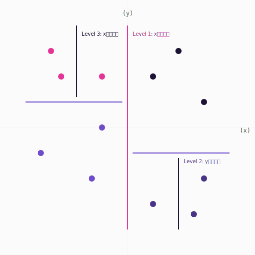
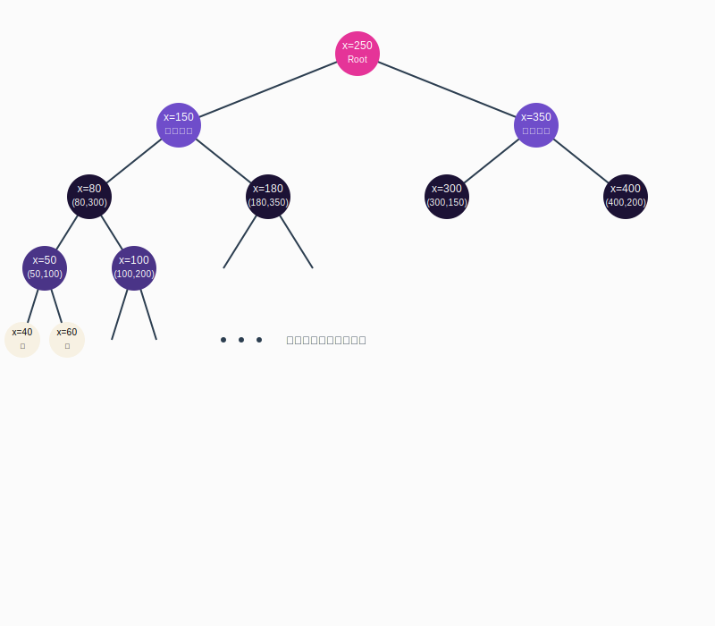

## 10万個の点から ## 一番近い点を見つける #### 〜KD treeを例とした効率的なアルゴリズムの設計〜 <div class="container"> <div class="col-left" data-markdown>  </div> <div class="col-right" data-markdown>  </div> </div> --- ### 📝自己紹介😊 <div class="profile-container"> <div class="profile-left" data-markdown> * さめ(meg-ssk) * 🧑💻 フリーランスのソフトウェアエンジニア * 得意分野: * 📸 コンピュータビジョン (画像認識/点群処理) * 🌍 空間情報処理 (GIS/リモートセンシング) * ☁️ クラウドインフラ設計/IaC (AWS) * GitHub: [s-sasaki-earthsea-wizard](https://github.com/s-sasaki-earthsea-wizard) * Speaker Deck: [syotasasaki593876](https://speakerdeck.com/syotasasaki593876) * LinkedIn: [syota-sasaki-878901320](https://www.linkedin.com/in/syota-sasaki-878901320/) </div> <div class="profile-right">  </div> </div> --- ### 問題提起: 一番近い点はどれ？ <div class="container"> <div class="col-box-left" data-markdown> * 平面上に4つの点があります (A, B, C, D) * 点Aに一番近いのはどの点でしょう？ * 点Bに一番近いのはどの点でしょう？ * 点Cに一番近いのはどの点でしょう？ * 点Dに一番近いのはどの点でしょう？ * **すべての点の一番近い点を計算するには？** </div> <div class="col-right" data-markdown> <img src="assets/images/xy-plane-with-4points.svg" alt="4 points on XY plane" width="600px"/> </div> </div> --- ### 📏 シンプルな解き方 <div class="container"> <div class="col-box-left" data-markdown> ##### 点Aに一番近い点を探す * AB, AC, ADの長さ(ノルム)を計算する * 言うなれば「定規で長さを測る」 * あとはこの中の最小値を選べばOK！ $$ \min(||AB||, ||AC||, ||AD||)$$ **合計3回の計算で解決！** </div> <div class="col-right" data-markdown> <img src="assets/images/xy-plane-with-4points-nearest-pointA.svg" alt="4 points on XY plane with norms" width="600px"/> </div> </div> --- ### 🔁📏 長さを測ることを繰り返す <div class="container"> <div class="col-box-left" data-markdown> ##### 点Bに一番近い点を探す * BC, BDの長さを計算する * BAの長さはすでに計算済み <img src="assets/images/xy-plane-with-4points-nearest-pointB.svg" alt="4 points on XY plane with norms" width="200px"/> **合計2回の計算で解決！** </div> <div class="col-box-right" data-markdown> ##### 点Cに一番近い点を探す * CDの長さを計算する * CA, CBの長さはすでに計算済み <img src="assets/images/xy-plane-with-4points-nearest-pointC.svg" alt="4 points on XY plane with norms" width="200px"/> **合計1回の計算で解決！** </div> </div> <div class="highlight-box" data-markdown> * 3回 + 2回 + 1回 = **6回の計算で解決！** * なんだ簡単じゃん！めでたしめでたし！ **...ではない！** </div> --- ### 💥計算量の爆発 点の数が10万個になったら？ <div class="simple-box" data-markdown> * 点Aに一番近い点を計算するためには99,999回の計算が必要 * 点Bに一番近い点を計算するためには99,998回の計算が必要 * ... </div> <div class="highlight-box" data-markdown> * 💥 計算量が爆発する！ * ❌💻 現実的な時間、計算リソースでは計算不可能！ * ❌🕰️ リアルタイムでの計算は不可能！ * 🤔 もっと賢く計算できないかな？ </div> --- ### ⁉️😮 突然ですがクイズです！ <div class="simple-box"> * 4本のワインがあります 🍷🍷🍷🍷 * その中に毒入りワインが1本あります 🍷☠️ * 飲んでから1日後に毒の効果が現れます 🍷🤮 * **毒入りワインを見つけるためには何人の毒見係が必要?** </div> <div class="highlight-box" data-markdown> * 🧑🤝🧑👭 **4人以下の毒見係で毒入りワインを見つける方法があります!** * 🙋 有名なクイズなので、答えを知ってる人は手を挙げてください! </div> --- ### 👩🏼 答え: 2人 👨🏾🦲 * 👩🏼アリスと👨🏾🦲ボブの2人が毒見係をします * 以下の左の表のように2人がワインを飲みます <br> <br> <div class="container"> <div class="col-box-left" data-markdown> <table> <tr> <th></th> <th>👩🏼</th> <th>👨🏾🦲</th> </tr> <tr> <td>🍷1</td> <td>⭕️</td> <td>❌</td> </tr> <tr> <td>🍷2</td> <td>⭕️</td> <td>❌</td> </tr> <tr> <td>🍷3</td> <td>❌</td> <td>⭕️</td> </tr> <tr> <td>🍷4</td> <td>❌</td> <td>❌</td> </tr> </table> </div> <div class="col-box-right" data-markdown> 1日後... * 👩🏼☠️ かつ 👨🏾🦲☠️ → 🍷1が☠️ * 👩🏼☠️ かつ 👨🏾✅ → 🍷2が☠️ * 👩🏼✅ かつ 👨🏾🦲☠️ → 🍷3が☠️ * 👩🏼✅ かつ 👨🏾🦲✅ → 🍷4が☠️ </div> </div> --- ### ワインが8本に増えたら？🍷x8 --- <section class="slide"> <!-- 少ない人数で毒味ができる --> <h3 class="title">ワインが8本に増えたら？</h3> <p>3人の毒見係で毒入りワインを特定できる</p> <div class="split"> <div class="left"> <table> <tr> <th></th> <th>アリス</th> <th>ボブ</th> <th>チャーリー</th> </tr> <tr> <td>ワイン1</td> <td>○</td> <td>○</td> <td>○</td> </tr> <tr> <td>ワイン2</td> <td>○</td> <td>○</td> <td>×</td> </tr> <tr> <td>ワイン3</td> <td>○</td> <td>×</td> <td>○</td> </tr> <tr> <td>ワイン4</td> <td>○</td> <td>×</td> <td>×</td> </tr> </table> </div> <div class="right"> <table> <tr> <td>ワイン5</td> <td>×</td> <td>○</td> <td>○</td> </tr> <tr> <td>ワイン6</td> <td>×</td> <td>○</td> <td>×</td> </tr> <tr> <td>ワイン7</td> <td>×</td> <td>×</td> <td>○</td> </tr> <tr> <td>ワイン8</td> <td>×</td> <td>×</td> <td>×</td> </tr> </table> </div> </div> </section> <section class="slide"> <!-- n人の毒見係がいれば2^n本のワインを毒見できる --> <h3 class="title">$$ n 人の毒見係がいれば 2^n 本のワインを毒見できる$$</h3> <ul> <li>$$ 組み合わせの工夫でn人の毒見係がいれば2^n本のワインから1本の毒入りワインを発見できる$$</li> <li>1000本のワインがあっても、10人の毒見係がいれば1本の毒入りワインを発見できる</li> <p>$$ 2^{10} = 1024 > 1000 $$</p> <li>10万本のワインがあっても、17人の毒見係がいれば1本の毒入りワインを発見できる</li> <p>$$ 2^{17} = 131072 > 100000 $$</p> </ul> <dev class="highlight-box"> <ul> <li>少ない人数で多くのワインを毒見できる!</li> <li>効率的な毒見係の配置が重要!</li> <li>🤔これを応用して、点の中から一番近い点を探す方法はないかな？</li> </ul> </dev>